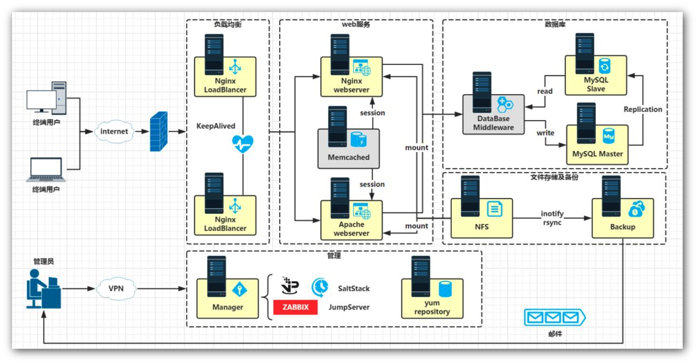

1.1 Web前端开发介绍
1. Web网站介绍
- 网络系统软件开发包括两种结构： C/S是客户机(client)/服务器（server） B/S是浏览器（browser)/服务器。
- B/S最大的优点就是可以在任何地方进行操作而不用安装任何专门的软件
- B/S架构软件的优势与劣势: 维护和升级方式简单。 成本降低，选择更多。 应用服务器运行数据负荷较重。
- 目前比较流行的WEB技术：Python、PHP、JavaEE、Ruby与ASP.NET
- 超文本传输协议(HTTP，HyperText Transfer Protocol)是互联网上应用最为广泛的一种网络协议。所有的WWW文件都必须遵守这个标准。设计HTTP最初的目的是为了提供一种发布和接收HTML页面的方法。
- HTTP是一个客户端和服务器端请求和应答的标准（TCP）。客户端是终端用户，服务器端是网站。通过使用Web浏览器、网络爬虫或者其它的工具，客户端发起一个到服务器上指定端口（默认端口为80）的HTTP请求。
2. 动态网站开发所需的Web构件
- 客户端浏览器
- Web前端
- Web服务器
- 服务器端编程语言
- 数据库管理系统
3. Web的工作原理
